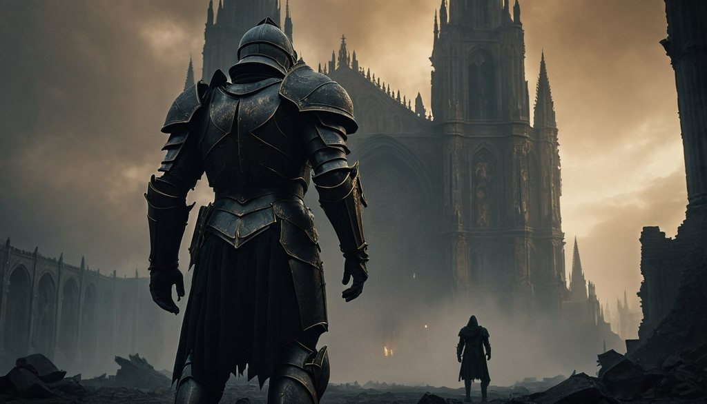

A Maldição de Strahd
Dungeons & Dragons 5ª Edição

Os aventureiros foram transportados para Baróvia, uma região cercada por uma névoa misteriosa e dominada pelo vampiro Strahd von Zarovich.
Informações da campanha
- ID: 001
- Mestre: João
- Sistema: Dungeons & Dragons 5e
- Gênero: Fantasia e terror
- Status: Em andamento
- Jogadores: 5
- Visibilidade: Privada
- Data de início: 15/08/2026
Personagens participantes
- Arthur - Guerreiro
- Lyra - Maga
- Thorin - Clérigo
- Kael - Ladino
- Elena - Druida
Última sessão
O grupo chegou à Vila de Baróvia e iniciou uma investigação sobre os acontecimentos misteriosos envolvendo o castelo de Ravenloft.